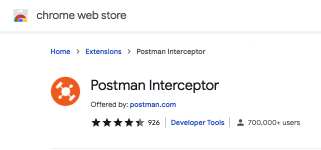
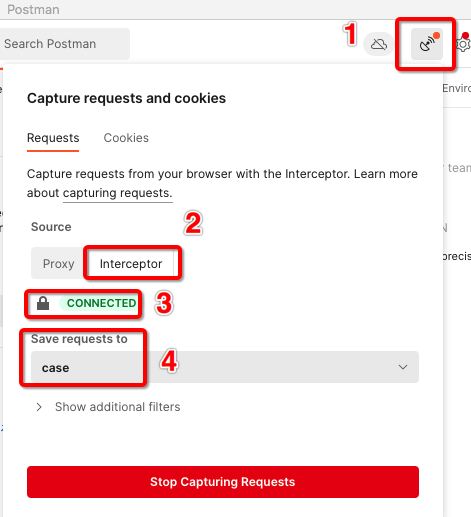
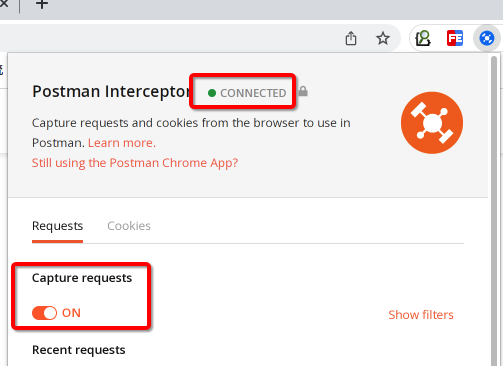
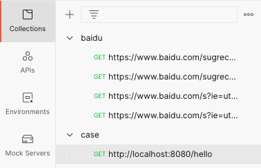
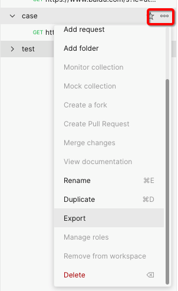

本书作者：测试开发刚哥，文章版权归个人所有，未经授权请勿转载。
大家好，我是刚哥。
Postman我们都会用，调接口无比强大，最近我们部门有同学分享了一个《如何快速自动化》专题，我一听这名字，呵呵，估计又是讲些空洞的理论。然而，当我敲打着键盘，耳边传来，Postman，录制流量，这几个字的时候，发现事情并没有这么简单。
Postman确实是可以录制流量的。前提是使用Chrome并安装Postman Interceptor插件：

安装好插件以后，就可以在Postman客户端中进行连接了：

- 点击右上角那个雷达图标
- 选择Interceptor
- CONNECTED表示已经连上了
- 选择Collections，最好先创建再选择
然后在浏览器插件中开启录制：

准备工作就绪。接着就开始尽情点点点，所有的接口流量都会保存到Postman的Collections里面：

流量就录制好了。可以在Postman使用这些录制好的接口。也可以导出成JSON文件：

文件内容如下：
{
"info": {
"_postman_id": "2335bec9-31ed-4eb5-bcd5-e7a145a7c5e8",
"name": "case",
"schema": "https://schema.getpostman.com/json/collection/v2.1.0/collection.json"
},
"item": [
{
"name": "http://localhost:8080/hello",
"request": {
"method": "GET",
"header": [
{
"key": "User-Agent",
"value": "Mozilla/5.0 (Macintosh; Intel Mac OS X 10_13_6) AppleWebKit/537.36 (KHTML, like Gecko) Chrome/96.0.4664.55 Safari/537.36"
},
{
"key": "Accept",
"value": "text/html,application/xhtml+xml,application/xml;q=0.9,image/avif,image/webp,image/apng,*/*;q=0.8,application/signed-exchange;v=b3;q=0.9"
}
],
"url": {
"raw": "http://localhost:8080/hello",
"protocol": "http",
"host": [
"localhost"
],
"port": "8080",
"path": [
"hello"
]
}
},
"response": []
}
]
}
里面url、method、header、body等应有尽有。
我给的示例只包括部分，大家可以自己亲自试试，说不定会有惊喜发现。
有了这个JSON文件，用处就大了，可以：
- 写个Python脚本自动生成用例
- 把JSON文件导入到接口测试平台的（像我司的接口测试平台就支持这种导入方式）。
未来tep和teprunner会支持这个功能。